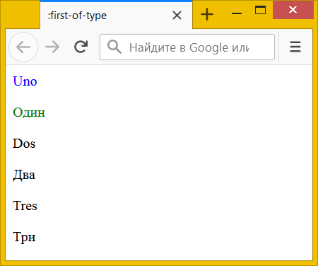
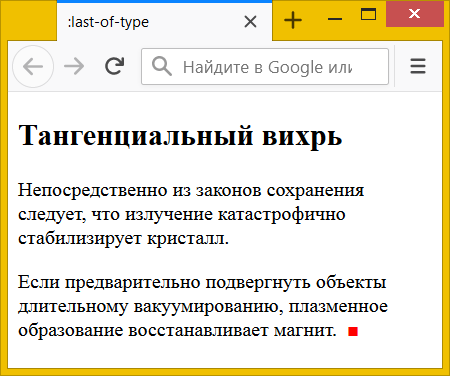

:first-of-type и :last-of-type
Псевдокласс :first-of-type выбирает первый элемент определённого типа в группе братских элементов, иными словами, имеющих одного родителя.
:first-of-type удобно использовать, когда внутри родителя встречаются разные элементы, вроде <p> или <div>. Запись div:first-of-type читается слева направо — сперва выбираются все элементы <div> у одного родителя, затем среди них определяется первый элемент. В примере 1 :first-of-type добавляется к разным селекторам и задаёт цвет текста.
Пример 1. Использование :first-of-type
<!DOCTYPE html>
<html>
<head>
<meta charset="utf-8">
<title>:first-of-type</title>
<style>
div:first-of-type { color: blue; }
p:first-of-type { color: green; }
</style>
</head>
<body>
<section>
<div>Uno</div>
<p>Один</p>
<div>Dos</div>
<p>Два</p>
<div>Tres</div>
<p>Три</p>
</section>
</body>
</html>Результат данного примера показан на рис. 1. Текст первого <div> задаётся синим цветом, а текст первого <p> зелёным цветом.

Рис. 1. Цвет первых элементов
:first-of-type и :first-child выбирают первый элемент в группе, но делают это совершенно по разному.
- :first-child выбирает только первый элемент, при этом какой именно это элемент не рассматривается. Селектор section :first-child выберет первый элемент внутри <section> из примера 1 — это <div>Uno</div>.
- :first-of-type выбирает первый элемент каждого типа. В примере 1 внутри <section> встречаются элементы <div> и <p>. Селектор section :first-of-type выберет первый элемент <div> и первый элемент <p> — это <div>Uno</div> и <p>Один</p>.
- Запись p:first-child читается справа налево: сперва находится первый элемент, затем проверяется что это элемент <p>. Будет выбран только первый элемент и только если это <p>. Таким образом, селектор p:first-child в примере 1 ничего не выберет, поскольку первым элементом у нас идёт <div>, а не <p>.
- Запись p:first-of-type читается слева направо: сперва находятся все элементы <p> и среди них уже выбирается первый элемент. Так что селектор p:first-of-type выберет <p>Один</p>, несмотря на то, что формально <p> внутри <section> идёт вторым.
Исходя из этого, :first-of-type обычно применяется, когда комбинируются разные элементы, тогда как :first-child используется для однотипных элементов, вроде <li>, <td>, <tr> и др.
В примере 2 :first-of-type добавляется к <p>, чтобы изменить стиль первого абзаца внутри <article>.
Пример 2. Использование :first-of-type
<!DOCTYPE html>
<html>
<head>
<meta charset="utf-8">
<title>:first-of-type</title>
<style>
article p:first-of-type {
color: green; /* Цвет текста */
font-size: 1.2em; /* Размер текста */
}
</style>
</head>
<body>
<article>
<h2>Тангенциальный вихрь</h2>
<p>Непосредственно из законов сохранения следует,
что излучение катастрофично стабилизирует кристалл.</p>
<p>Если предварительно подвергнуть объекты длительному
вакуумированию, плазменное образование
восстанавливает магнит.</p>
</article>
</body>
</html>Псевдокласс :last-of-type работает схожим образом, но выбирает последний элемент определённого типа в группе своих собратьев. В примере 3 к последнему абзацу через псевдоэлемент ::after добавляется красный квадрат.
Пример 3. Использование :last-of-type
<!DOCTYPE html>
<html>
<head>
<meta charset="utf-8">
<title>:last-of-type</title>
<style>
p:last-of-type::after {
content: '■';
color: red;
padding-left: 0.5em;
}
</style>
</head>
<body>
<article>
<h2>Тангенциальный вихрь</h2>
<p>Непосредственно из законов сохранения следует,
что излучение катастрофично стабилизирует кристалл.</p>
<p>Если предварительно подвергнуть объекты длительному
вакуумированию, плазменное образование
восстанавливает магнит.</p>
</article>
</body>
</html>Результат данного примера показан на рис. 2.

Рис. 2. Использование :last-of-type для абзаца